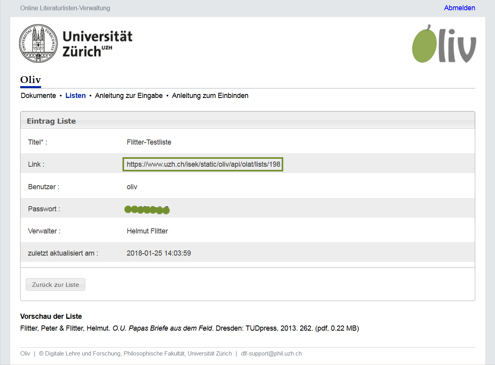

Anleitung zur Einbindung einer Liste in OLAT
Nachdem eine Liste in der Listenansicht publiziert worden ist, kann man diese in einen OLAT-Kurs einbinden, damit die Studierenden lesenden Zugriff darauf erhalten. Dazu geht man folgendermassen vor:
- Klicken Sie bei der entsprechenden Liste in der Übersicht auf "View".
- Kopieren Sie nun die URL bei "Link" in die Zwischenablage ihres Rechners. Unten sehen Sie eine Vorschau der Liste, so wie sie in OLAT dargestellt würde.
 - Starten Sie nun Ihren OLAT-Kurs.
- Klicken Sie oben links auf "Werkzeuge" und dann auf "Kurseditor".
- Klicken Sie auf den Button "Kursbausteine einfügen".
- In dem Pop-up-Fenster, welches sich nun geöffnet hat, klicken Sie auf den Link "Externe Seite".
- Geben Sie nun einen passenden Kurztitel für diesen Kursbaustein ein, z.B. "Literaturliste" und klicken Sie anschliessend auf "Speichern".

- Klicken Sie nun auf den Tab "Seiteninhalt". Fügen Sie jetzt in das Feld "URL" den Link ein, den Sie aus "Oliv" kopiert haben.
Wählen Sie im Bereich "Darstellung konfigurieren" die Option "Vollständig eingebettet (Quelle verborgen)"“. Setzen Sie das
Häkchen bei "Seite Passwort geschützt" und übertragen Sie in die beiden Felder "Benutzer" und "Passwort" die Angaben aus "Oliv".
Danach klicken Sie auf den Button "Speichern".
- Der neue Kursbaustein ist jetzt bereit zum Publizieren, was durch das kleine grüne Symbol am linken Bildschirmrand angezeigt wird.
Schliessen Sie nun den Kurseditor durch einen Klick auf das kleine rote Kreuz am rechten oberen Bildschirmrand und wählen Sie dabei
die Option "Änderung publizieren: Ja, automatisch".
- Die Liste ist jetzt in den OLAT-Kurs eingebunden. Klicken Sie links in der Kursnavigation auf den neuen Baustein, um sich die Liste anzusehen.